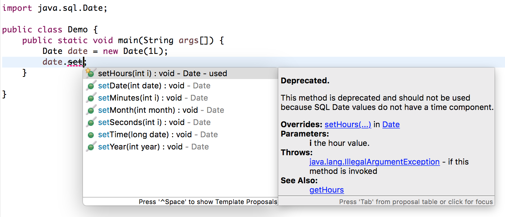
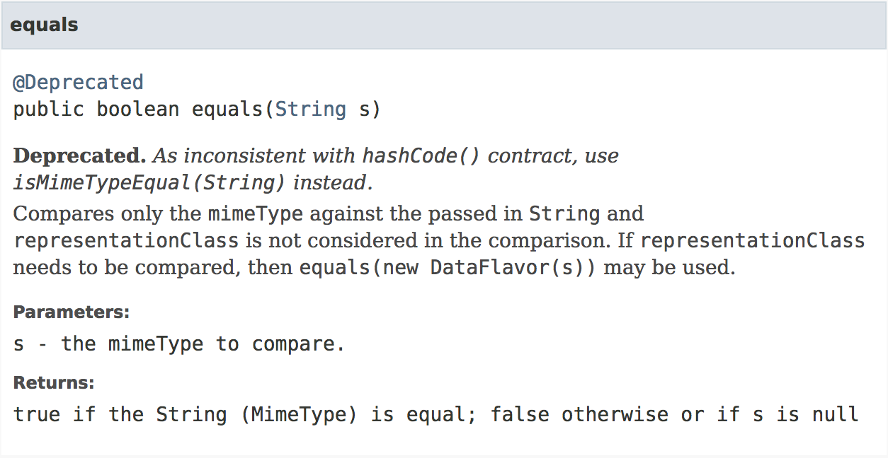
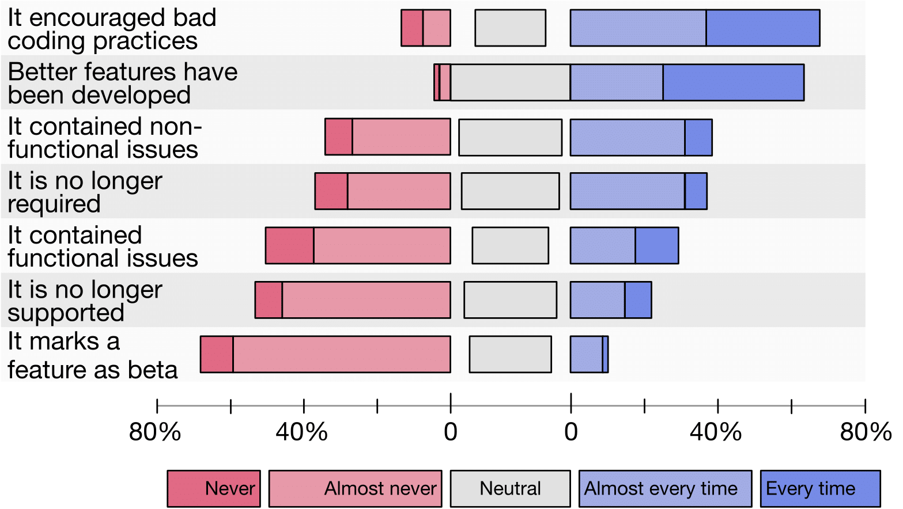
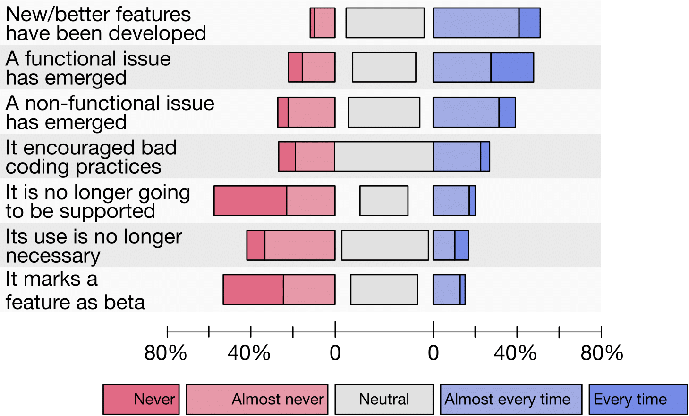
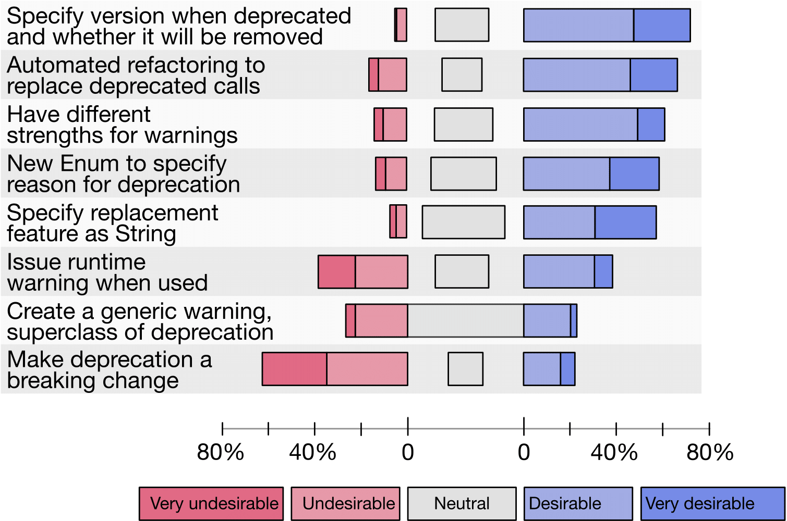

According to the official Java documentation, deprecation is:
“A program element annotated @Deprecated is one that programmers are discouraged from using, typically because it is dangerous, or because a better alternative exists”
Typically, when an API artifact is deprecated, this is marked in both the Javadoc and as a compiler warning. as seen below:

Compiler warning in IDE on usage of deprecated feature

Javadoc of deprecated feature
This gives the API consumer a warning that the feature they are using is now obsolete and that a replacement for it has been provided. According to the Java documentation:
It is no longer important. It is so unimportant, in fact, that you should no longer use it, since it has been superseded and may cease to exist in the future.
However, the Java language designers have noticed that deprecation warnings are not being taken seriously (as seen in JEP 277: Enhanced Deprecation), and in their opinion the current implementation suffers from two issues:
- Being open to misuse
- Inconsistencies with clean up of deprecated features
A consequence of this has been that API consumers received a mixed signal over deprecation of a feature. It was unclear as to what would happen to a deprecated feature in the future, whether it would be removed or if it would stay in the API forever. All this has led to API consumers not taking deprecation seriously and not reacting at all. In the opinion of the Java language designers this has led to API consumers not reacting to deprecation and overall not taking a deprecation warning seriously, thus making it difficult for the Java SE API to remove deprecated features.
Proposed changes
To address these issues, the Java language designers have proposed the following enhancements:- forRemoval(): A method named ‘forRemoval()’ will be added to the deprecation class. This sets a boolean flag to either true or false, where true signifies that the feature is going to be removed in the future and false signifies that there are no plans to remove the deprecated feature in a future release.
- since(): A method named ‘since()’ will be added to the deprecation class. This will be used to set a string during the deprecation of a feature to indicate the version of the API in which this feature has been deprecated.
Verification of proposal
The aforementioned observations and changes are being made based on observations in the Java SE API. While this might address the Java SE API developers' concerns, there is no confirmation that third-party API producers and API consumers experience similar issues and find these proposals to be sufficient. To that end we conducted a study, by interviewing 16 API producers who work on OSS APIs (eg. JUnit, Spring and Mockito) and industrial APIs (for companies such as ABN Amro, HP and ING bank) and challenged our findings by surveying 170 Java based developers (both API producers and API consumers).Popular reasons to deprecate a feature

Popular reasons to deprecate a feature as ranked by API producers
To obtain a ranking of the most popular/important reasons as perceived by API producers, we asked developers in our survey to indicate how often they had used one or more of the motivations behind deprecation. We see that the most popular reason to deprecate is because a feature encourages bad coding practices. Surprisingly, this reason was the only one not mentioned by our participants, in fact it is one of the reasons originally mentioned in Javas' documentation on deprecation.
A participant also mentioned marking a feature as beta/experimental as one of the use cases of deprecation. In our opinion and that of the participant, this is a clear case of misuse of the deprecation mechanism. However, as things stand right now, the deprecation mechanism is the best way to convey a warning to API consumers.
Reaction to deprecation
We asked the API producers whether they would want their clients to always react to deprecation. Interviewees essentially responded to this question by saying "it depends''. In the opinion of API producers the reason behind deprecation is the driving factor for API consumers to react. In their opinion it is imperative that API consumers react to a feature that is deprecated due to security issues, but are generally ambivalent when it comes to requiring reactions for features that have a better alternative available. Another factor that might play a major role is the cost involved in reacting to a deprecation. If the new feature is absolutely worth it, then a reaction might take place, while if it is deemed unnecessary no API consumer might adopt it.
API consumers also claim that they frequently react to deprecation by replacing the deprecated call with the recommended replacement. This is contrary to previous observations made by Java language designers and previous research results.
On diving deeper, we see that the reason behind deprecation is the most important driving factor to react to deprecation, echoing the sentiment of API producers. The deprecation warning on its own does not act as an incentive to react.

Popular reasons to deprecate a feature as ranked by API producers
Removal of features
The Java language designers have stated that one of the main reasons behind the confusion surrounding the deprecation mechanism is that the future of a deprecated method is unknown. Previous work has shown that most Java APIs never remove deprecated features. We asked our interviewees if they remove deprecated features and why they do or do not.API producers say that the removal policy is very variable. Removal often depends on whether they want to introduce a breaking change or not. In the case of industrial API producers, introducing a breaking change was a difficult decision, hence regular cleanup of deprecated features was not performed. On the other hand, OSS API producers, major releases often presented them with the ripe opportunity to remove a deprecated feature.
31% of our survey respondents mention that they remove a deprecated feature at least 2 releases after it has been removed. However, 27% mention that they never remove feature. This shows a split in terms of removal policies and is highly context dependent.
Improvements to deprecation mechanism
Based on our interviews, proposed enhancements to existing deprecation mechanism in JEP 277, alternative proposals made in JEP 277 and implementation of deprecation in other languages, we came up with a list of potential enhancements to deprecation.

Popular reasons to deprecate a feature as ranked by API producers
- The deprecation mechanism should allow API developers to indicate the version in which a deprecated feature will be removed. Currently, the proposed enhancements will an API producer to indicate that a deprecated feature will be removed. While this is the most popular enhancement among our survey respondents, they indicated that a precise version of removal would also be very helpful.
- Deprecation warnings should be of different strengths so that API developers can indicate the severity of the deprecation of a feature. We observe that there are many different reasons behind deprecating a feature. Not all of these reasons need to be reacted to. However, in certain cases API producers find that it is imperative their client transitions away from a deprecated feature as usage of it might be dangerous. API consumers agree with this perspective as well, they too indicate that the reason behind deprecation is the driving factor behind such a transition. By allowing API developers to indicate the severity of a deprecated feature, this communication stream can be made more efficient and give an API consumer a clear indication that a reaction is needed.
- Java should introduce a warning mechanism to minimize the misuse of the deprecation mechanism. We see that the deprecation mechanism is currently open for misuse as is evidenced by the fact that marking a feature as beta/experimental is done by using deprecation. To overcome this issue, we propose that Java introduces a warning mechanism that allows for an additional channel of communication without perverting the meaning of deprecation.
Beyond the aforementioned improvements to the deprecation mechanism, we also highlight the need for the a refactoring tool that helps an API consumer in transitioning from a deprecated feature to its replacement would be helpful in ensuring that developers take deprecation seriously. This would reduce the burden of transition on the API consumer side and encourage more API consumers to react to deprecation. At the same time this will embolden API producers to remove a deprecated feature as they will be provided with the insurance that they will not break their client's code.